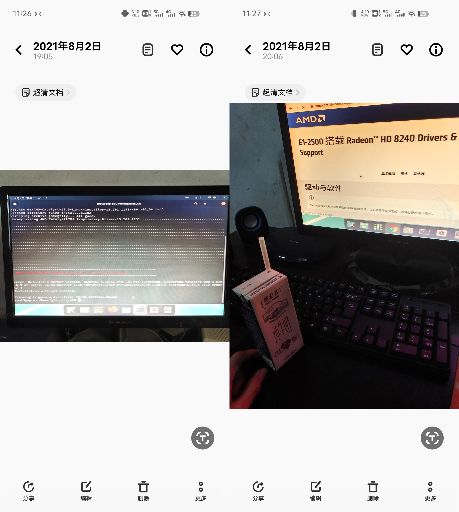

Linux杂谈
第一次把Linux 塞进那台二手电脑，是在高一暑假。选的叫Pop!_OS。 那台电脑是家里初一买的刷题机，九百块不到，二手联想，芯是笔记本处理器改的，只有2G内存。 爸妈单位那时总让刷安全消防题，它就派上了这用场。
一、家里那台老台式
小时候，我特羡慕别人家有电脑。最爱去蹭电脑玩游戏。 那会儿满世界跑着WinXP， 大屏幕上的4399小游戏，可比按键手机里的俄罗斯方块、扫雷勾人魂。 后来家里终于也有了台，那天我欢喜得午饭都没心思吃，扑上去乱点。 可惜住校，在家日子少，终究没点出什么名堂。
真让我和这电脑慢慢熟络起来的，是初三那年的疫情。 漫长的居家，时间像水一样淌。我挂着网课，后台却东点西戳，也不知捣鼓啥。 渐渐觉出不对劲，它越来越慢，开个东西老半天，挂着网课更像在爬。 我学会了“百度百度”，知道了这叫“硬件不行”。 学着看了自己电脑的配置，心里凉了半截——我这电脑，它不能说跑4399稳当吧，但开机速度确实慢得让人心灼。 不过，九百块这么一套，还要什么自行车呀，太值了。 话虽如此，心有不甘，从那时起，我走上了名为“优化”的不归路。硬件动不了，就折腾软件呗。
B站成了我的课堂：“哪个浏览器最快最省”、“系统优化指南，让老电脑飞”……后来胆子大了，看“CPU超频”、“精简系统”。 那段日子挺难忘的。我在自己机子上试了十几种浏览器，最后停在Yandex（毛子的东西，确实有两下子）。 系统设置改来改去，改坏过两次（一次把C盘压缩了……），一共花了四十块去电脑店重装系统。 看着师傅操作，我觉得我也行。 于是买了人生第一块U盘，查资料，自己试，竟真成了。 从此再没进过电脑店的门，还用这U盘给同学、妹妹装过系统。 超频没敢碰，风险太大，修了那两次我也老实点儿了，就没再折腾。
 人生第一块U盘，仍在服役
人生第一块U盘，仍在服役
不过精简系统让我着了魔。电脑本是Win7旗舰版， 听说家庭版省资源，就找来装上，感觉差别不大。 后来知道有种叫“精简系统”的，宣传得天花乱坠，去了多余功能，优化了进程。 心动了。先试的Win10精简版 （同学他爸给同学装了Win10，羡慕得我当天下午就自己装上了。 没经验，撞上“特供版”，开机蹦出俩选项：左边电脑管家，右边360，倒计时逼你选，多等几秒就会爆炸的惊悚。 吓傻了，点了腾讯管家。不过老电脑驮Win10太吃力，最终还是换回去了）。
后来知道个叫不忘初心的大佬， 专做精简系统的，出了精简Win7。 用了阵子，还行。 但怕缺东西误事，担心稳定性，终究还是换回了旗舰版。
二、Linux初体验
高一暑假，网上冲浪，撞见了Linux。 才惊讶地发现，原来这世上，除了Windows和高贵的MacOS，还有个厉害角色。 它说：要求低，速度快，能由着你性子改……整！ 我心动了。查啊查，发现它有数不清的分支。 挑来挑去，装了Pop!_OS。 安装过程还算顺利，开机第一眼，挺好看。 但兴奋劲儿没持续多久，问题来了：装软件要敲命令，我不会。 为一个脑袋里没影子的系统专门去学？当时实在提不起这个劲。 用了一天，就想回Windows。
{kind=link}
可更大的麻烦接踵而至：我的电脑知识是Windows喂出来的，Linux？ 不好意思，一窍不通。 好不容易找到Linux版的U盘启动工具，满心以为能装回Windows，却发现它（在Linux环境下）只能刻Linux。 我仿佛被困在了一个循环里：从一个Linux，跳到另一个Linux。 没辙，试吧。Ubuntu、Mint、 Manjaro…… 总盼着下一个能自带装回Windows的工具。 直到跳进一个啥也没有的，完了，回不去了……
2021年尝试Linux（Pop!_OS），啥也不懂装驱动更难受的是，那时还在网课。 腾讯会议没Linux版，微信没有，QQ的Linux版粗陋不堪。 更要命，打不了中文！它不自带中文输入法。自己捣鼓几次，都败下阵来。 面对漆黑的“终端 （那时不知它叫终端），感觉往后的电脑时光，也像这屏幕一样黑了。 每天开机，对着屏幕发呆，然后掏出手机上网课。
转机出现在搬家后。 联系上一个初中同学，住得不远。 跑去他家，给我的U盘装上了Windows安装环境。 靠着它，老电脑终于救回来了。 谢过他，我就死心塌地经营我的Win7，把它玩出了花。 后来闲得慌，又琢磨硬件，把电脑大卸八块两次，清了灰，认全了五脏六腑。
高三学业紧张，碰电脑少了。 也是这段时间，老电脑彻底罢工了，当时推测是主板老了。 我修了一天，放静电、拆散热、清灰……总之瞎捣鼓，没救回来。 只好放一边，过了段没电脑的日子。 Linux？自然也就再没碰过。
 多年后把它从储藏室翻了出来
多年后把它从储藏室翻了出来
 2025年，我把它拆掉当纪念品
2025年，我把它拆掉当纪念品
三、迟到的和解
毕业的暑假，买了新笔记本。 原配的Win11，用着别扭，bug不断。 熟门熟路地重拾U盘，装了Win10，好用。 学习、看视频、打游戏，它都轻松扛着。 有时回想过去那些折腾的日子，有种奇异的不真实感。
进入大学后，提前知道大二有Linux课程，这让我有了弥补当年遗憾的动力。 大二前的暑假，我跟着B站，用CentOS + VMware，系统地把这系统啃了个七七八八。 这次学习让我明白： 当年瞎装Linux，很大程度上只是被它的宣传语和各异的桌面吸引，好似无意成了网友口中“只是喜欢捣鼓好看桌面”的“极客”。 有天冲浪，看到微信出了Linux版，一查，腾讯会议、QQ的新版也都来了。 软件商店的普及也让安装变得直观，甚至制作Linux启动盘的工具也变得易用了。 这些变化让我既感慨又惊喜，沉寂的记忆又被点燃了。
于是，在一些空闲时间，我在自己的笔记本上再次尝试Linux。 选了Debian。 划出几十G，做好启动U盘（还是那块老金士顿），选地域、语言，配分区……安了KDE桌面。 桌面亮起那一刻，像走过了好多年……
最大的感受是：现在学聪明了，当年不会敲命令装软件，现在商店里一搜一点，就成了，甚至比Windows方便不少，连“下一步”都省了。 浏览器搜B站，敲出“哔哩哔哩”（自带中文输入法，爽！）。 试着写代码，运行，说缺东西。按提示敲条命令装上，再跑，成功！ Windows环境变量出来挨打。 打开微信，嗯？Windows版一直没的深色模式，Linux版倒做得挺快。 翻翻设置，藏着不少没见过的好东西。想换个好看主题？要苹果（本性难移，还是爱捣鼓桌面）！ 商店里一找一点，嗯~好看。
大二上学期期末前几周，探索欲爆发，把叫得上名的Linux：Debian, Kali, Mint, Pop!_OS, openSUSE, Fedora……挨个装了个遍。 桌面也换来换去， 从KDE到 Gnome。 各有各的好，也各有各的别扭。 红帽系可能缺个软件； 蓝牙耳机看视频时会断；Gnome不够丝滑； KDE的细节打磨欠缺……后来折腾够了，用了很久着纯EndeavourOS（Arch系），很流畅，也省电，很喜欢。 不过后来因比赛软件没Linux端，又回到了Windows。
经常在网上刷到：大学生，想换纯Linux，能当主力吗或推荐哪个发行版？ 我从没回答过，但慢慢心里也有点答案： 任何事情没有什么不能的，用，就别怕折腾，怕折腾，用Windows。 Linux舒适区毕竟在服务器端，Windows霸榜这些年也不是毫无根据。 说到底，操作系统只是工具，能拿它干活，无论什么系统。 倒是别反过来成了它的附庸，更别像我当年，沉迷于表面，只沦了个“捣鼓好看桌面的”。